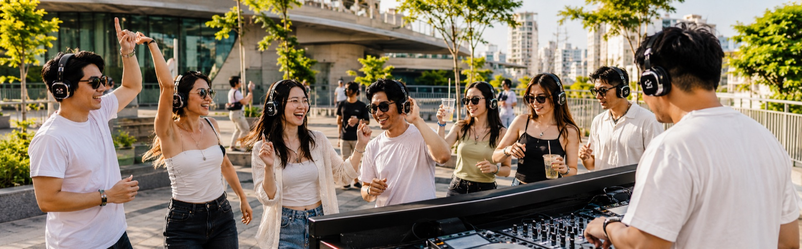

靜音派對
本次古着派對將邀請專業 DJ 團隊「動漫派 DMP」共同合作，以日式復古為主題， 打造全方位的音樂體驗。同時考量周邊住戶的居住安寧，本次派對將採用耳機形式進行—— 名額有限，有興趣的朋友請把握機會，點擊下方連結預約！

戴上耳機，跟著自己的節奏搖擺
活動時間
115年9月12日14:00-17:00
活動地點
心中山線形公園（R9出口）
參加方式
活動官網事前預約（現場保留名額30分鐘，逾時不候）、現場報名
耳機數量
100台
🎧 兌換活動耳機需抵押個人證件，歸還耳機時退回。
穿搭競賽
每一件古着，都承載著一段歲月；每一次穿搭，都是對經典的重新演繹。
我們即將舉辦一場專屬於古着愛好者的穿搭盛會，誠摯邀請您以布料為畫筆， 展現獨特的復古美學。本次競賽分為以下兩組：
- Cosplay 意象組：打破次元壁，以古着元素重塑經典的角色意象。
- 風格穿搭組：回歸日常品味，穿出專屬於您的 Vintage 風格。
無論是哪一種風格，只要展現出您對古着的深刻理解， 就有機會在最終的「人氣票選」中脫穎而出，奪得優勝。 邀請熱愛古着與穿搭的您，一同參與這場跨越時空的時尚交會。 報名熱烈進行中，期待您的加入。
報名方式
現場登記，人數有限（暫定）
評選方式
評審評分 + 現場觀眾投票
📌 此區塊為範例內容，正式報名與評選規則確認後請替換。